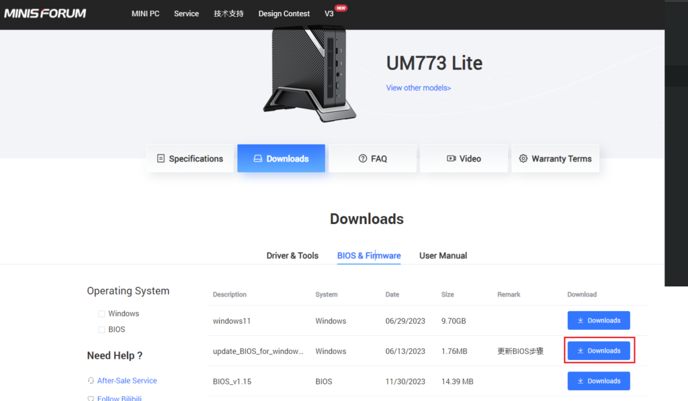
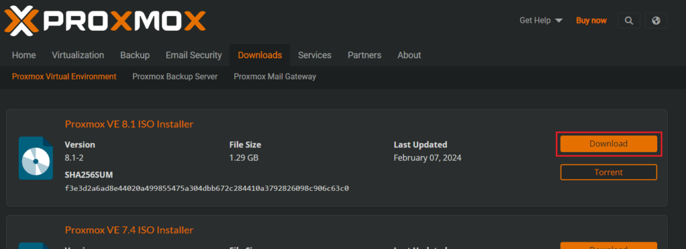
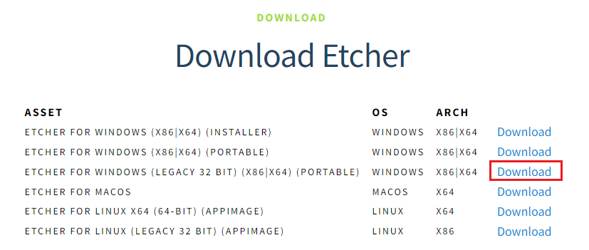
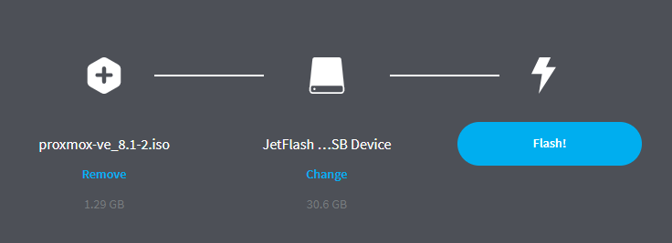
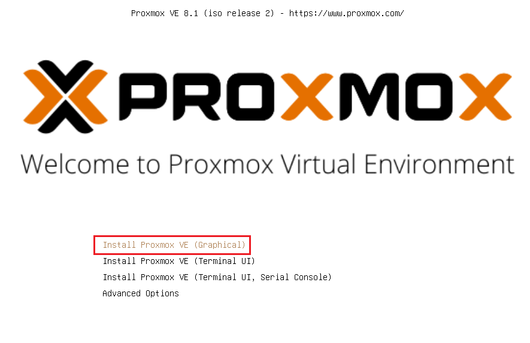
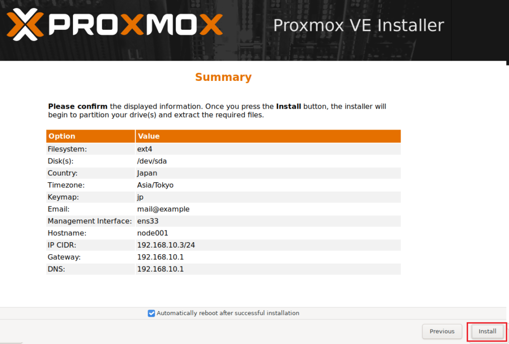
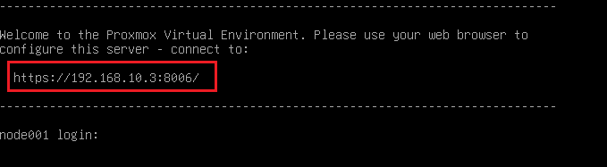
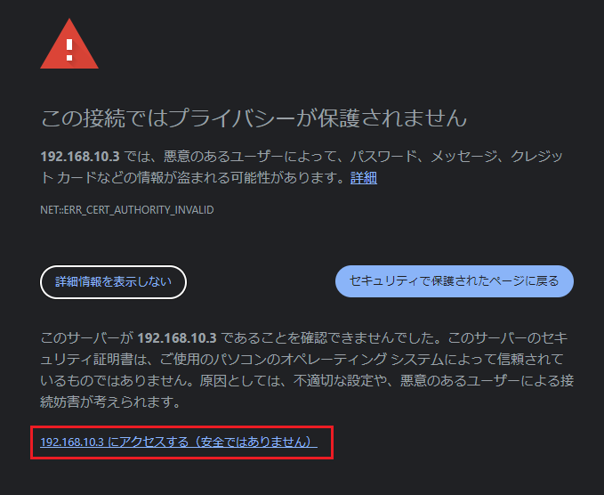
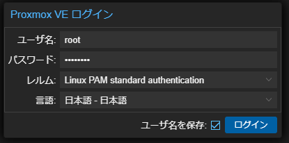
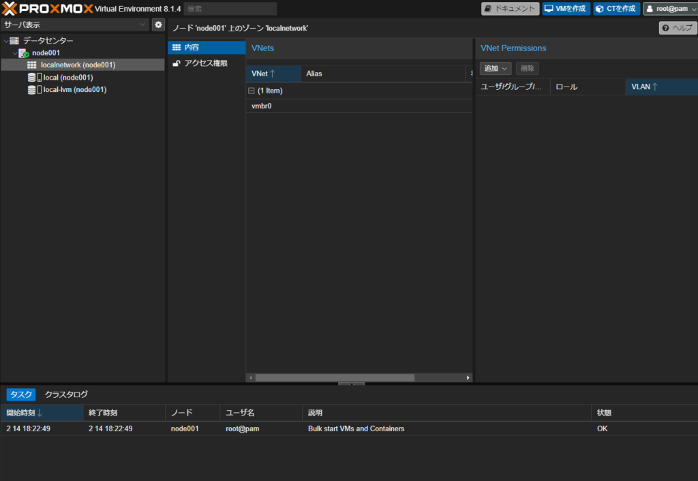

Install Proxmox-VE
0. はじめに
メインのタワー型PCで仮想環境を用意していたのですが、グラボを積んでいたりで電気代が高い。。。
そこで、今回はミニPCを使って仮想環境を用意することに。
ある程度性能は欲しいので、コスパの良さそうなUM773 Liteをポチりました。
ハイパバイザはESXIを使用していたのですが、VMwareが買収されライセンスがサブスクになってしまったこともあり、VMとコンテナ両方を作成できるProxmoxで構築していきます。
1. ミニPCの初期設定
今回土台にするUM773 Liteですが、初期のBIOSは不具合が多かったのでアップデートをします。
（お決まりですが、BIOSアップデートについては自己責任で）
1.1 Secure Bootの無効化
Secure Bootを無効化します。これは後述のProxmoxのインストールから始める場合でも必要になります。
まず、ミニPCの起動時にDeleteキーを押してBIOS画面に入り、以下項目をDisableにします。
Security > Secure Boot > Secure Boot
次に、初期でインストールされていたWindowsで通常起動し、
以下リンクの「update_BIOS_for_windows_Step」をダウンロード。
ダウンロードしたファイルを管理者権限で実行します。
https://www.minisforum.com/new/support?lang=en#/support/page/download/34 
あとは勝手にアップデートが入り起動します。
2. インストールメディアの準備
ここからが本題ですが、Proxmox公式のこちらを参考に進めていきます。
https://pve.proxmox.com/pve-docs/chapter-pve-installation.html
2.1 ISOのダウンロード
以下リンクから最新のISOをダウンロードします。
https://www.proxmox.com/en/downloads/proxmox-virtual-environment/iso 
2.2 USBメモリに書き込み
Etcherを使用してダウンロードしたISOをUSBメモリに書き込みます。
以下リンクからポータブル版をダウンロードします。
https://etcher.balena.io/#download-etcher 
先程ダウンロードしたISOファイルとUSBメモリを指定しFlashをクリックするとインストールメディアが完成します。 
2.3 Proxmox VEのインストール
PCに先程作成したUSBメモリを接続し起動します。
BIOS画面に入り以下で Boot Option #1 にUSBメモリを指定しsave&exit
（私の場合は調子が悪くBoot順が反映されなかったので、Boot overrideで直接USBメモリを指定し起動しました。）
Boot > Boot Option Priorites
再起動後インストール画面が表示されるのでInstall Proxmox VR (Graphical) を指定。 
インストールは淡々と進めていけば良いです。
Emailは適当で大丈夫です。Hostname (FQDN) はProxmox上で管理するノード名になるので、クラスタを組む場合はあとを考えて命名すると良いです。
最後に設定内容を確認し、問題なければInstallをクリック。 
インストールが完了すると、CLI上でログインIPが表示されるのでブラウザからアクセスします。 
証明書エラーが出るので、無視してアクセス。 
アクセス後、ログインを求められるので以下でログイン。
Language：日本語
ユーザ名：root
パスワード：<インストール時に設定したもの>
 
以上です。